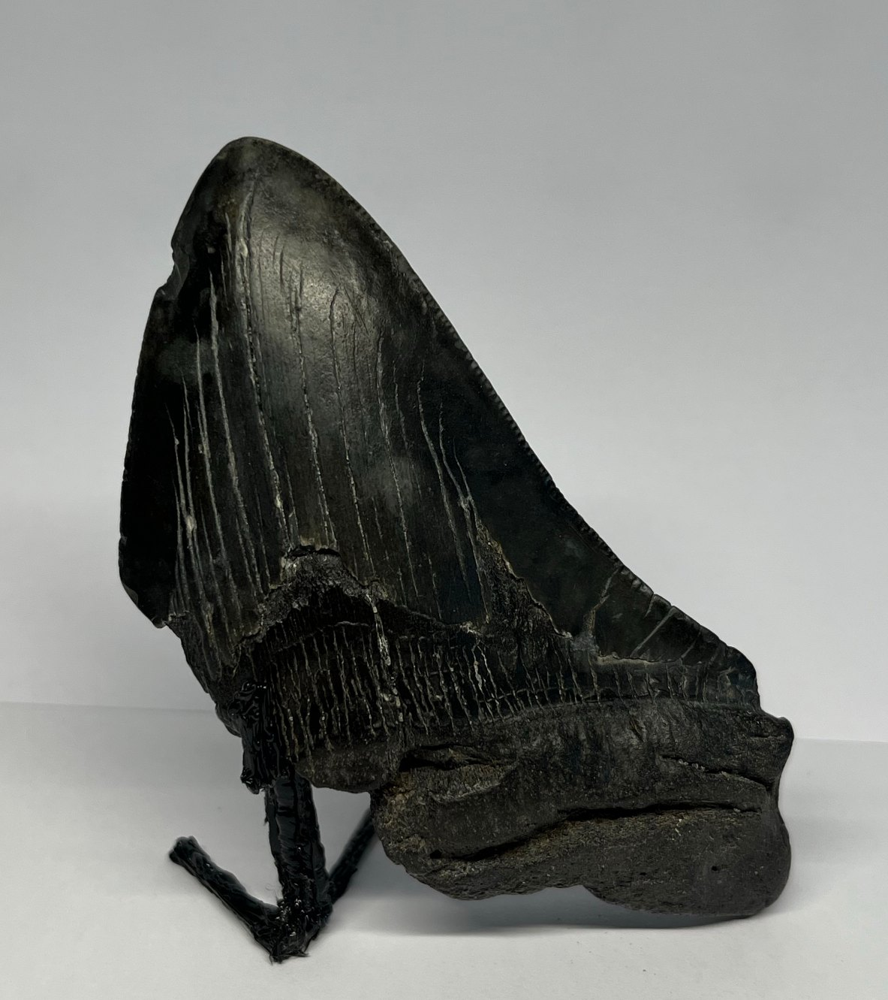
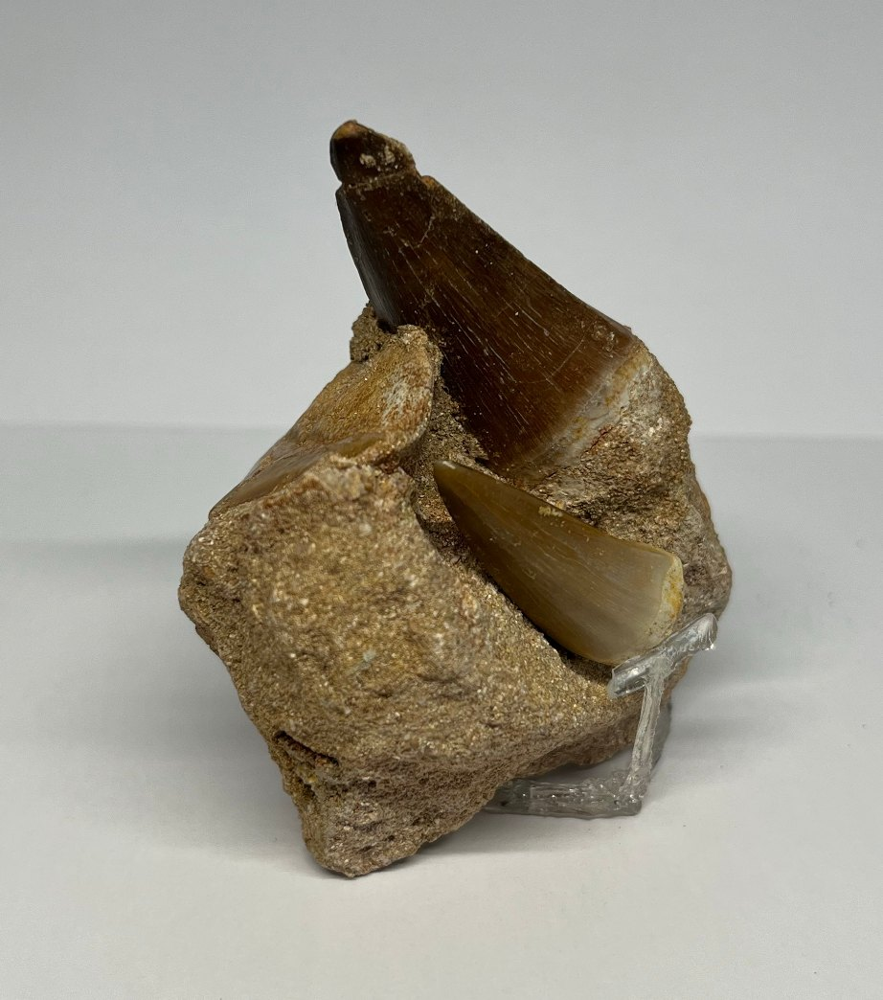
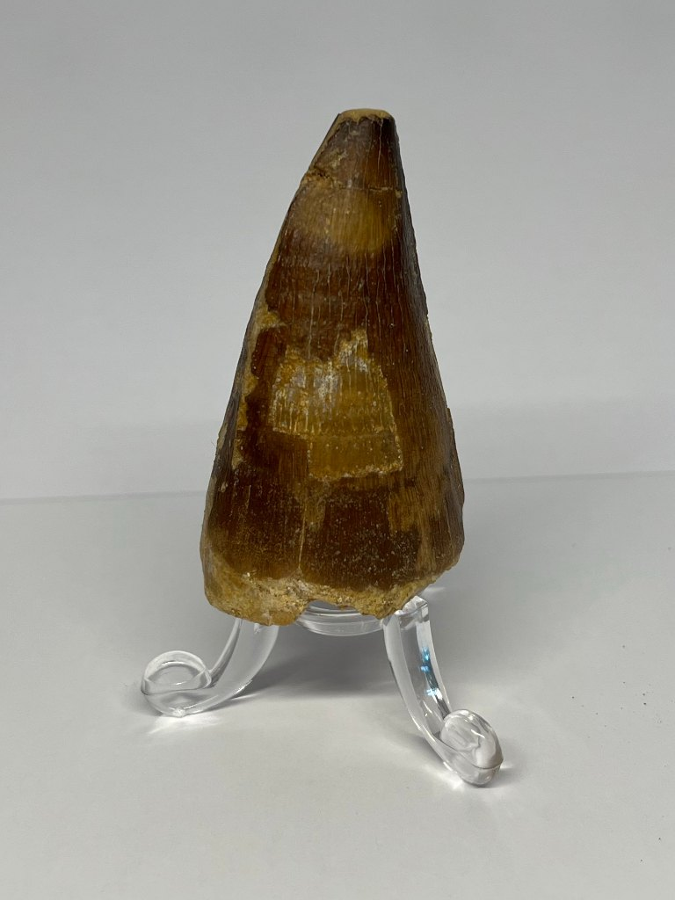

Zie ook

Fossielen
Mosasaurustand in matrix
Een krachtige tand nog in het fosfaatgesteente van Oued Zem, Marokko.

Fossielen
Losse mosasaurustand
Een kegelvormige tand met glanzend glazuur, uit de fosfaatlagen van Oued Zem.